Vücut Kitle İndeksiBMI CalculatorBMI CalculatorBMI Calculator
VKİ'ni DSÖ sınıflarıyla hesapla, boyuna göre sağlıklı kilo aralığını gör.Your BMI with WHO categories and the healthy weight range for your height.Tu IMC con las categorías de la OMS y el peso saludable para tu altura.Seu IMC com as categorias da OMS e a faixa de peso saudável para sua altura.
Vücut kitle indeksini (VKİ) saniyeler içinde hesapla ve ne anlama geldiğini gör.Calculate your body mass index (BMI) in seconds and see what it means.Calcula tu índice de masa corporal (IMC) en segundos y descubre qué significa.Calcule seu índice de massa corporal (IMC) em segundos e veja o que ele significa.


Ekran görüntüleriScreenshotsCapturas de pantallaCapturas de tela
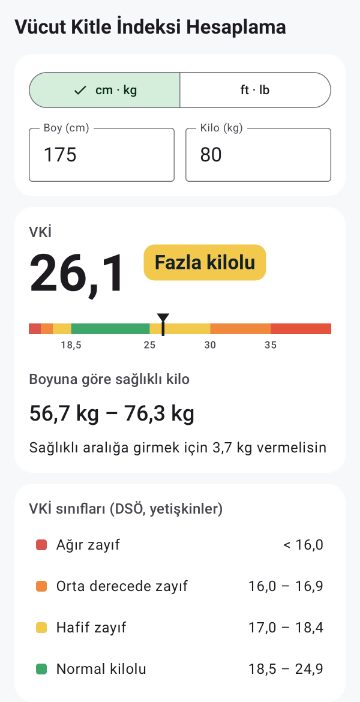
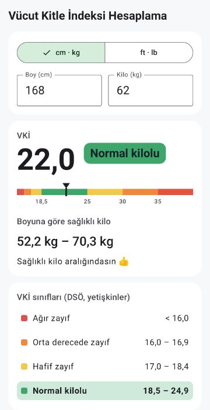
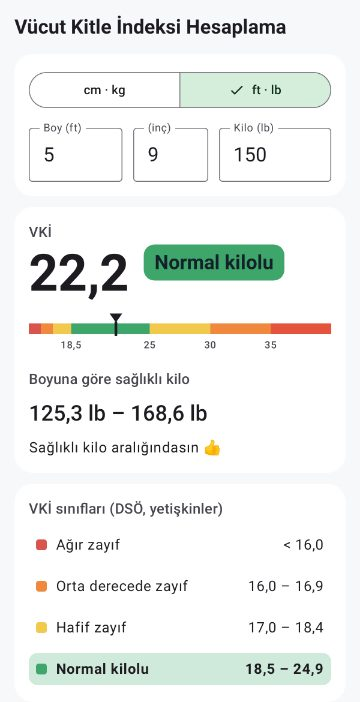
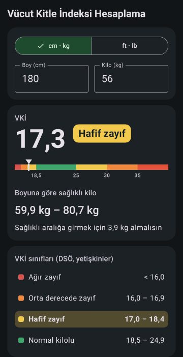
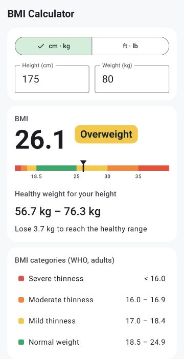
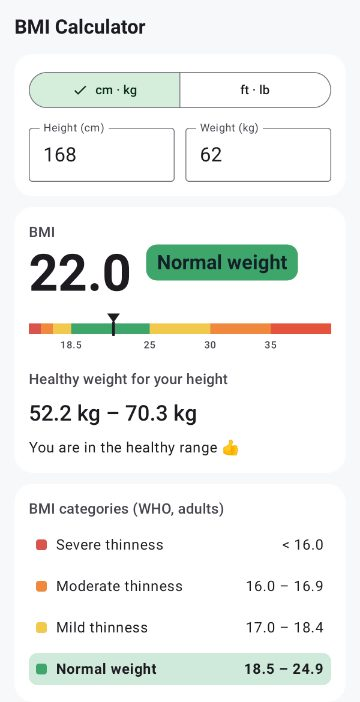
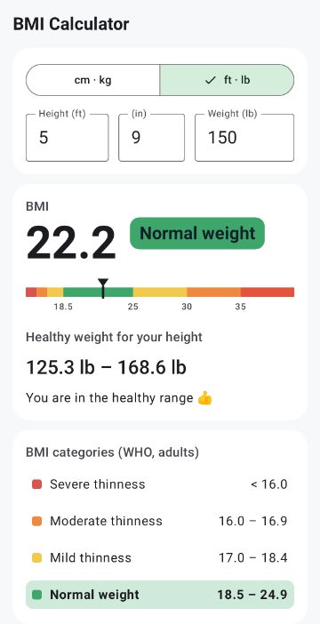
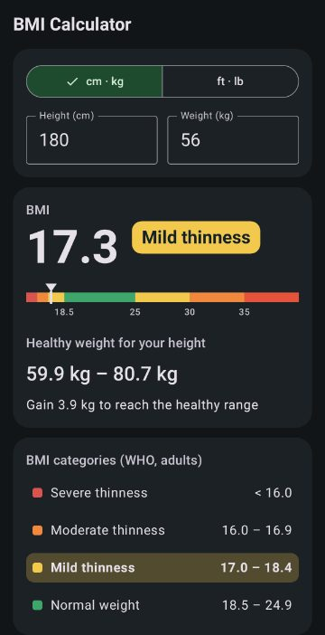
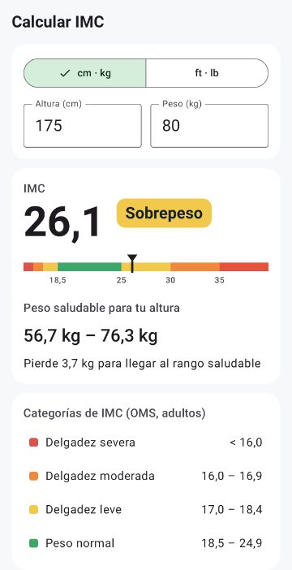
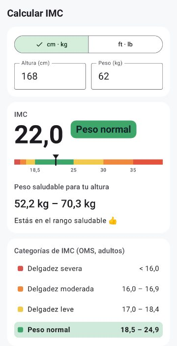
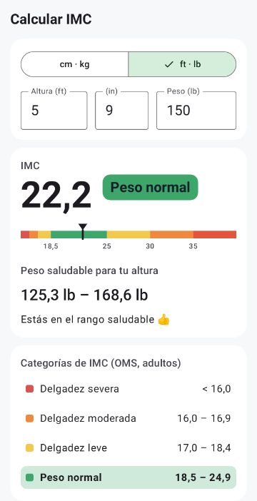
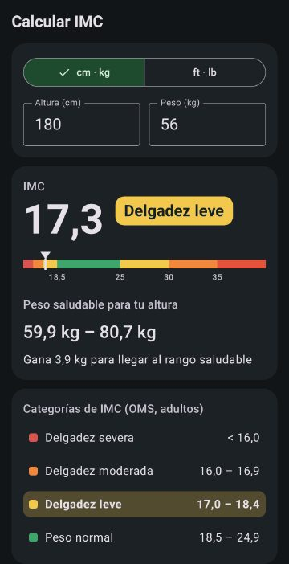
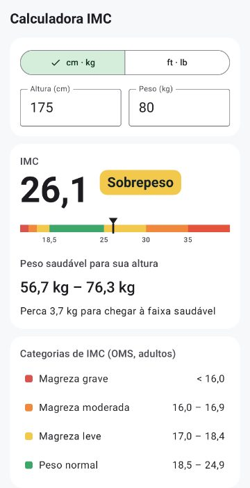
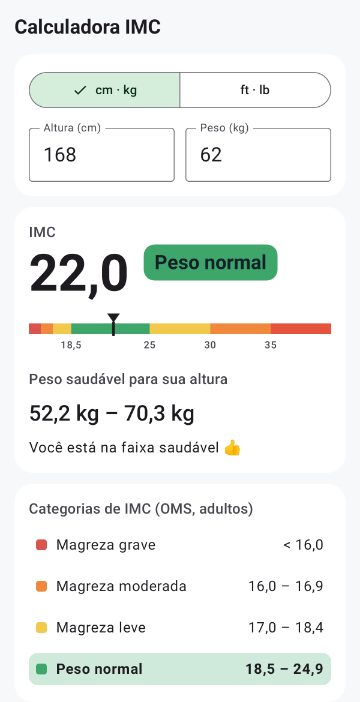
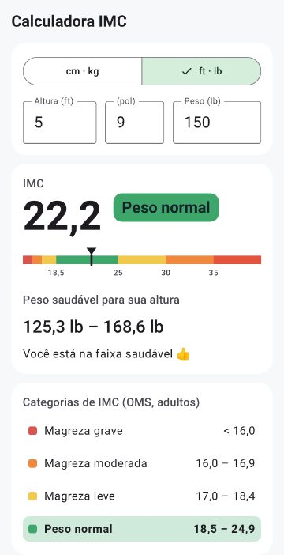
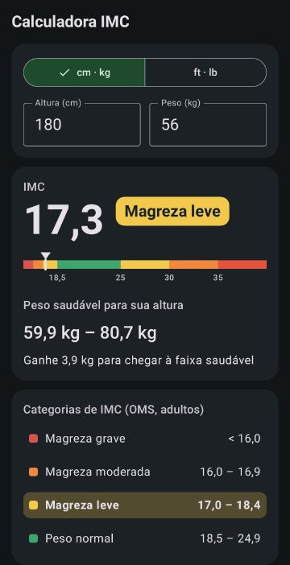
ÖzelliklerFeaturesCaracterísticasRecursos
Yazarken anında sonuç; hesapla düğmesine gerek yokInstant result as you type: no button to pressResultado al instante mientras escribes, sin botónResultado na hora enquanto você digita, sem botão
Dünya Sağlık Örgütü'nün yetişkin sınıfları: ağır zayıftan 3. derece obeze kadarWHO categories for adults, from severe thinness to obesity class IIICategorías de la OMS para adultos, de delgadez severa a obesidad grado IIICategorias da OMS para adultos, de magreza grave a obesidade grau III
Nerede olduğunu gösteren renkli skalaA colour scale that shows where you areUna escala de colores que muestra dónde estásUma escala colorida que mostra onde você está
Boyuna göre sağlıklı kilo aralığı ve o aralığa girmek için kaç kilo alman ya da vermen gerektiğiThe healthy weight range for your height, and how much to gain or lose to reach itEl rango de peso saludable para tu altura y cuánto ganar o perder para llegar a élA faixa de peso saudável para sua altura e quanto ganhar ou perder para chegar a ela
Metrik (cm, kg) ya da İngiliz ölçü birimleri (ft, inç, lb)Metric (cm, kg) or imperial (ft, in, lb) unitsUnidades métricas (cm, kg) o imperiales (ft, in, lb)Unidades métricas (cm, kg) ou imperiais (ft, pol, lb)
Son girdiğin değerler hatırlanırYour last values are rememberedRecuerda tus últimos valoresSeus últimos valores ficam salvos
Açık ve koyu tema; Türkçe, İngilizce, İspanyolca ve PortekizceLight and dark theme; English, Turkish, Spanish and PortugueseTema claro y oscuro; español, inglés, turco y portuguésTema claro e escuro; português, inglês, espanhol e turco
2.0 sürümü sıfırdan yazıldı: eski "ideal kilo" formülü yerine Dünya Sağlık Örgütü'nün güncel sınıflandırması ve sağlıklı kilo aralığı kullanılıyor. Hesap yok, üyelik yok. Boyun ve kilon sadece telefonunda kalır. VKİ, yetişkinler (18 yaş ve üstü) için bir tarama ölçüsüdür. Tek başına vücut yağını ya da sağlığını göstermez; çocuklarda ve gençlerde farklı yorumlanır. Bu uygulama genel bilgi verir, tıbbi tavsiye değildir; sağlığın için doktoruna danış.Version 2.0 is rebuilt from scratch with today's WHO classification and the healthy weight range instead of an old "ideal weight" formula. No account, no sign-up. Your height and weight stay only on your phone. BMI is a screening measure for adults (18+). It does not show body fat or health on its own, and it is read differently for children and teenagers. This app gives general information and is not medical advice; talk to a doctor about your health.La versión 2.0 se ha rehecho desde cero con la clasificación actual de la OMS y el rango de peso saludable en lugar de una antigua fórmula de "peso ideal". Sin cuenta ni registro. Tu altura y tu peso se quedan solo en tu teléfono. El IMC es una medida orientativa para adultos (18+). Por sí solo no indica la grasa corporal ni la salud, y en niños y adolescentes se interpreta de otra forma. Esta app ofrece información general y no es un consejo médico; consulta a un médico sobre tu salud.A versão 2.0 foi refeita do zero com a classificação atual da OMS e a faixa de peso saudável, no lugar de uma antiga fórmula de "peso ideal". Sem conta, sem cadastro. Sua altura e seu peso ficam só no seu celular. O IMC é uma medida de triagem para adultos (18+). Sozinho, não indica a gordura corporal nem a saúde, e em crianças e adolescentes é interpretado de outra forma. Este app traz informação geral e não é aconselhamento médico; converse com um médico sobre sua saúde.